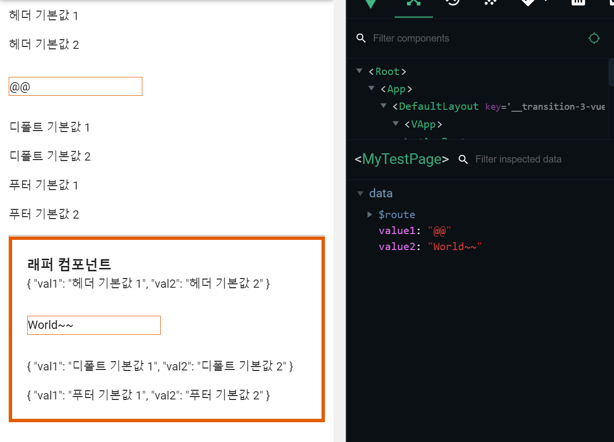

#04 Transparent Wrapper Pattern
Transparent Wrapper Pattern 이란?
Transparent Wrapper Pattern 이란, native element (기본요소)를 감싸는 방식의 컴포넌트 패턴을 말합니다.
기본 요소에 특정 스타일 또는 추가 기능이 재사용 되는 경우, 매번 구현하는 것은 노가다 요소가 되버립니다.
또한 매번 구현했다면, 스타일이나 기능 변경 시, 노가다의 지옥이 열립니다.
위와같은 이유로 기본 요소에 추가된 부분이 재사용 될 때,
기본요소 + 추가 부분을
하나로 묶는 컴포넌트를 만들어야 하며, 이러한 컴포넌트 패턴을 Transparent Wrapper Pattern 이라고 합니다.
Transparent Wrapper Pattern의 이름은 중요한 의미를 가지고 있습니다.
기본 요소의 원래 기능은 원본 그대로 사용할 수 있어야 한다는 것입니다.
즉, 기본 요소의 원래 기능은 그대로 사용 가능한 상태에서, 추가 부분이 더해진 컴포넌트를 의미 합니다.
이하 사용할 용어를 정의하겠습니다.
기본 컴포넌트: 기본 요소래퍼 컴포넌트: Transparent Wrapper Component
먼저 기본 컴포넌트에서 지원할 수 있는 기능의 종류를 살펴보겠습니다.
PropsEvent ListenerSlot
위 항목들을 래퍼 컴포넌트에서 재정의 하기위해 반복 코딩을 한다면, 이것 또한 문제가 됩니다.
Vue는 이러한 상황에 사용할 수 있는 Vue Instance Property를 제공하고 있습니다.
vm.$attrsvm.$listenersvm.$scopedSlots
이러한 Vue Instance Property를 사용하면, 중복 코딩 없이 래퍼 컴포넌트를 구현할 수 있습니다.
Vue Instance Property
vm.$attrs
vm.$attrs는 부모로 부터 전달받은 Props 중, 컴포넌트 자신의 내부에 정의하지 않은 Props가 담기는 객체 입니다.
다시말해, 컴포넌트 자신의 Props는 그대로 바인딩 되고, 바인딩 되지 못한 Props들을 모아둔 객체 입니다.
이를 래퍼 컴포넌트 입장에서 본다면, 래퍼 컴포넌트의 $attrs를 기본 컴포넌트에 바인딩 시켜므로써,
기본 컴포넌트의 기존 Props는 그대로 지원하게 됩니다.
<!-- 래퍼 컴포넌트 -->
<template>
<div>
<기본컴포넌트 v-bind="$attrs"></기본컴포넌트>
</div>
</template>
위의 코드는 우리가 의도했던 대로 동작되지는 않습니다.
이유는 Vue Instance의 기본 설정에 의해, 컴포넌트 자신에게 정의되지 않은 Props는 자신의 Root Element에 바인딩 시키기 때문입니다.
이 상태에서는 Root Element에 Props가 바인딩 되기 때문에, $attrs에는 빈 객체가 되버리므로, 의도한 대로 동작되지 않는 것입니다.
Vue Property 중 inheritAttrs 속성의 기본값이 true인데, 이 속성이 true라면 vm.$attrs를
컴포넌트 자신의 Root Element에 바인딩 시킵니다.
따라서, inheritAttrs: false로 설정하여 기본 컴포넌트에 Props를 전달할 수 있습니다.
<template>
<div>
<기본컴포넌트 v-bind="$attrs"></기본컴포넌트>
</div>
</template>
<script>
import 기본컴포넌트 from "...";
export default {
inheritAttrs: false,
}
</script>
vm.$listeners
vm.$listeners는 전달받은 모든 Event Listener가 담기는 객체 입니다.
래퍼 컴포넌트에서 추가된 Event가 있다면, 해당 Event Emiter Method를 만들고,
$listeners 객체는 기본 컴포넌트의 v-on 디렉티브를 사용하여 그대로 전달해 주면 됩니다.
<template>
<div>
<기본컴포넌트 v-on="$listeners"></기본컴포넌트>
</div>
</template>
Slot
기본 컴포넌트의 Slot 기능도 래퍼 컴포넌트에서 그대로 지원해줘야 합니다.
래퍼 컴포넌트에서의 Slot은 기본 컴포넌트 바디에서 $scopedSlots를 사용하여 반복문으로 구현할 수 있습니다.
구현방식은 Dynamic Slot Names와 Slot Props를 사용 합니다.
<template>
<div>
<기본컴포넌트>
<template v-for="(_, name) in $scopedSlots" v-slot:[name]="slotProps">
<slot :name="name" v-bind="slotProps"></slot>
</template>
</기본컴포넌트>
</div>
</template>
지금까지의 처리를 래퍼 컴포넌트에 구현하면, 기본 컴포넌트의 원래 기능을 모두 지원하며, 래퍼 컴포넌트에서 추가한 기능 또는 스타일도 지원하는
Transparent Wrapper Component가 완성 됩니다.
아래 코드는 이번 포스팅의 모든 내용을 담은 예시 입니다.
경로: “@/components/myComp/MyInput.vue”
<template>
<div>
<!-- header Slot -->
<slot name="header" v-bind="headerData">
<div>
<p>｛｛ headerData.val1 ｝｝</p>
<p>｛｛ headerData.val2 ｝｝</p>
</div>
</slot>
<input type="text" :value="value" @input="emitInput">
<!-- default Slot -->
<slot v-bind="defaultData">
<div>
<p>｛｛ defaultData.val1 ｝｝</p>
<p>｛｛ defaultData.val2 ｝｝</p>
</div>
</slot>
<!-- footer Slot -->
<slot name="footer" v-bind="footerData">
<div>
<p>｛｛ footerData.val1 ｝｝</p>
<p>｛｛ footerData.val2 ｝｝</p>
</div>
</slot>
</div>
</template>
<script>
export default {
props: {
value: {
type: String,
default: null,
},
},
data: () => {
return {
headerData: {
val1: "헤더 데이터 1",
val2: "헤더 데이터 2",
},
defaultData: {
val1: "디폴트 데이터 1",
val2: "디폴트 데이터 2",
},
footerData: {
val1: "푸터 데이터 1",
val2: "푸터 데이터 2",
},
};
},
methods: {
emitInput(event) {
const value = event.target.value;
this.$emit("input", value);
},
},
};
</script>
경로: “@/components/myComp/MyInputWrapper.vue”
<template>
<div>
<h3>래퍼 컴포넌트</h3>
<MyInput v-bind="$attrs" v-on="$listeners">
<template v-for="(_, name) in $scopedSlots" v-slot:[name]="slotProps">
<slot :name="name" v-bind="slotProps"></slot>
</template>
</MyInput>
</div>
</template>
<script>
import MyInput from "@/components/myComp/MyInput.vue";
export default {
inheritAttrs: false,
components: {
MyInput,
},
};
</script>
<style scoped>
.myInputWrapper {
padding: 20px;
border: 5px solid #e25c00;
}
</style>
경로: “@/views/MyTestPage.vue”
<template>
<div>
<MyInput v-model="value_1"></MyInput>
<hr/>
<MyInputWrapper v-model="value_2">
<template v-slot:header="headerProps">
<p>헤더 데이터: ｛｛ headerProps ｝｝</p>
</template>
<template v-slot="defaultProps">
<p>기본 데이터: ｛｛ defaultProps ｝｝</p>
</template>
</MyInputWrapper>
</div>
</template>
<script>
import MyInput from "@/component/myComp/MyInput.vue";
import MyInputWrapper from "@/components/myComp/MyInputWrapper.vue";
export default {
components: {
MyInput,
MyInputWrapper,
},
data: () => {
return {
value_1: "Hello",
value_2: "World",
};
},
};
</script>
<h3> 와 스타일이 추가된 기본 컴포넌트를 래퍼 컴포넌트를 만들어 재사용할 수 있게 되었습니다.

참고자료: https://zendev.com/2018/05/31/transparent-wrapper-components-in-vue.html
Vue 포스팅은 여러 절로 구성되어 있습니다.
- #01 v-bind 활용
- #02 vue.config.js의 runtimeCompiler 옵션
- #03 유효성 검사 3rd 라이브러리: vee-validate
- #04 Transparent Wrapper Pattern